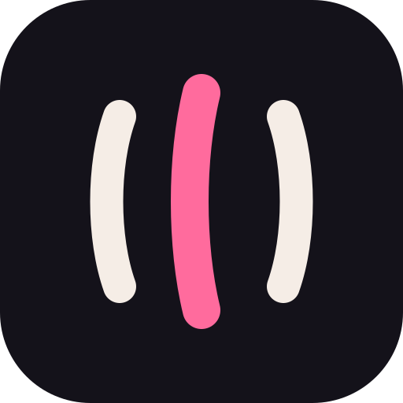
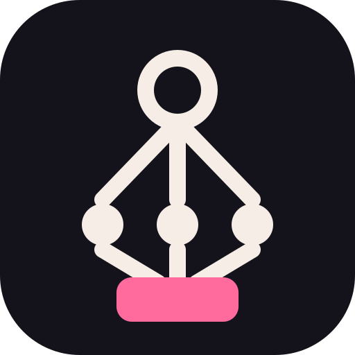
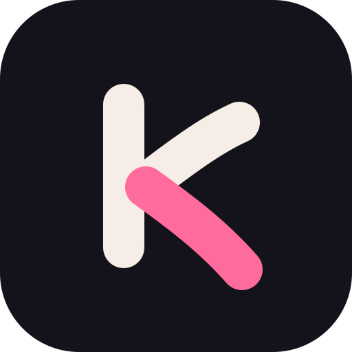
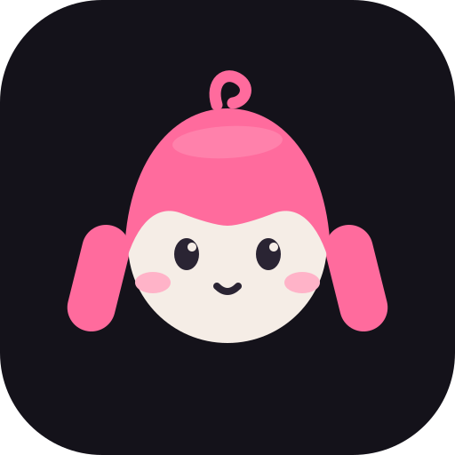
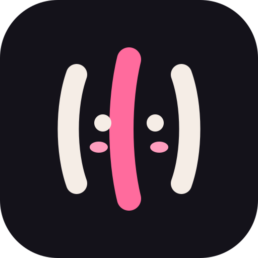

Dark tile, cream ink #F5EDE6, sakura accent #FF6B9D. Left → right: 256 / 64 / 32 px (16 px viability is the dock test).
Tiga aliran = fase plan mengalir ke satu delta. Nasional-Jepang, minimal, aman di 16 px.

Satu goal (ring) → tiga langkah (dot) → satu deliverable (kotak pink). Metafora produk yang persis.

k kecil rounded, kaki pink sebagai aksen. Paling "kawaii" tanpa mascot; paling kuat di ukuran kecil.

Karakter langsung: kepala agent wanita, twin-tails pink. Paling jujur ke arti nama; butuh ilustrator untuk final.

Kompromi: mark A diberi mata + blush — jadi wajah kawaii tanpa berhenti jadi mark abstrak. Aman 16 px.
